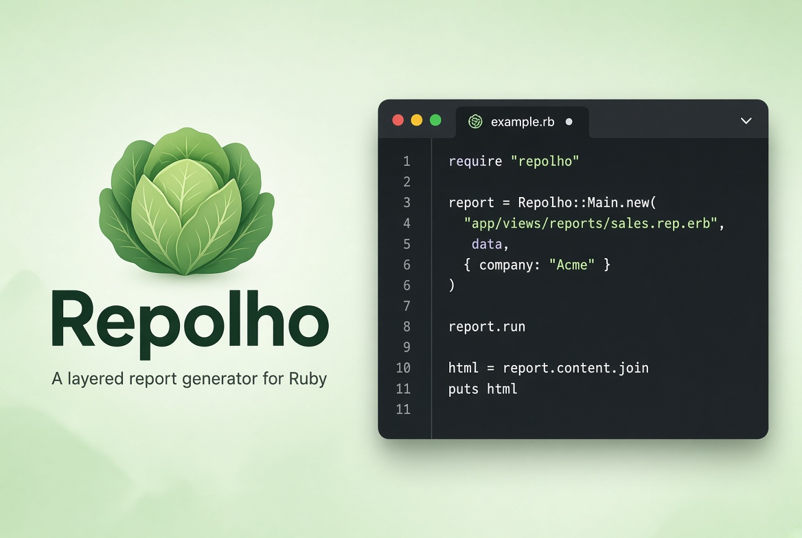
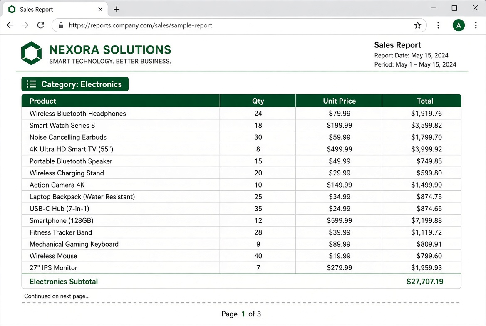
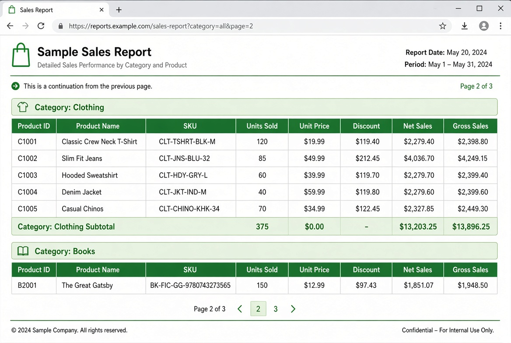

Create structured HTML reports from your data with nested groups, page breaks, headers, footers and automatic statistics — all from a simple template.
Get started View on GitHubRepolho is Portuguese for “cabbage”.
Just like a cabbage is made of many layered leaves that wrap around each other, a report is built from nested layers: the report itself, pages, groups, headers and footers. Each layer keeps its own statistics and structure.
The file extension .rep comes from both repolho and report.
Repolho is a cousin of PHPReports, the report generator I wrote in PHP in the early 2000s. That project used XML templates transformed with XSLT and helped a lot of people produce printable reports from their databases. The same ideas — groups, headers, footers and page control — live on here, now in Ruby, with ERB and a much simpler workflow.
Only the features that matter. Technical details live in the GitHub repository.
Group data by any attribute. Groups can be nested as deep as you need. Each group has its own header, footer and statistics.
Define how many rows fit on a page. Repolho automatically starts a new page and can reprint group headers after the break.
Report-level, page-level and group-level headers and footers. Use them for titles, column names, subtotals or signatures.
Automatic sum, average, min, max and count for every numeric column. Ask for the current group, the current page, or the whole report.
Optional paper size and orientation. Client-side pagination so users can navigate long reports in the browser. Forced page breaks after groups when you want a clean start.
Add a special block that only appears at the end of the report — perfect for grand totals, notes or a signature line.
A sales report grouped by category, with page breaks at roughly 15 rows. The second image shows the header being reprinted after the break.

Page 1 — group header and subtotal

Page 2 — header reprinted, new group starts
The template is a normal HTML file with a few special elements. Everything outside the report is left as-is; everything inside is processed as ERB.
Put your template in a .rep.erb file and give Repolho the data.
That’s the whole idea. The template describes the structure; your data fills it. For the full template syntax and all options, see the repository.
Non-invasive. Use Repolho without Rails, or bring Rails into it — not the other way around.
Suggested convention: put your .rep.erb templates in app/views/reports/.
You keep full control of the query and the rendering. Repolho does not take over your controllers or views.
Need it in the background? Generate the HTML inside a job and store or email the result. The same code works.